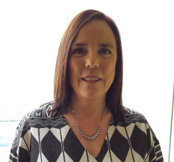

1 PRESENTACIÓN

Todas las actividades del año 2019 que se muestran en esta Memoria parecen pertenecer a un mundo lejano que a día de hoy nos resultan increíbles y difíciles de recuperar. Creo que ninguno de nosotros se podría imaginar el vuelco que darían nuestras vidas tanto a nivel personal como profesional en el primer trimestre del año 2020.
Como exdirectora del Centro Oceanográfico de Vigo (COV) es muy gratificante volver la vista atrás y observar lo realizado en estos 5 años que he estado en la Dirección. Las diferentes Memorias presentadas en este período han plasmado muy bien los avances conseguidos en los múltiples proyectos desarrollados por el personal del COV y las diversas acciones llevadas a cabo en el Centro.
Si nos concentramos en el año 2019, se puede indicar que se participó en 106 proyectos de investigación, de los que 88 (83%) proyectos contaron con algún tipo de financiación externa. En total 50 proyectos (47%) tuvieron financiación internacional. En los últimos 3 años (2017-2019) se ha producido un incremento importante del número de proyectos en los que ha colaborado principalmente el Área de Medio Marino y Protección Ambiental. Además se asistió a un total de 76 reuniones internacionales y 212 reuniones nacionales, que incluían desde Grupos de Trabajo y Talleres de diversos organismos a visitas a Universidades, Organismos de Investigación, etc. Asimismo, se participó en 17 campañas oceanográficas realizadas a bordo de los diferentes buques que utilizan habitualmente los investigadores del IEO.
Dentro del quinquenio 2015-2019, es importante señalar el incremento en la producción científica del Centro en los dos últimos años, 2018 y 2019. Durante ese período, el COV colaboró con una media de 5 instituciones por documento, siendo reseñable que los artículos publicados en revistas WOS se firmaron con 315 instituciones, de las cuales un 82% eran internacionales. Sin embargo, es necesario realizar un esfuerzo para incrementar la tasa de liderazgo en la producción científica. En el apartado de divulgación, me gustaría destacar que gracias al impulso del personal de comunicación y divulgación del Centro, desde noviembre de 2019 el IEO ya es miembro acreditado de la Red de Unidades de Cultura Científica y de la Innovación (Red de UCC+i). La UCC+i da continuidad y optimiza el esfuerzo en materia de comunicación y divulgación llevado a cabo en los últimos años, al tiempo que refleja el compromiso institucional con la difusión, con el que el IEO pretende ser referente en la divulgación de la investigación marina.
También es reseñable que los Centros Oceanográficos de Vigo y A Coruña recibieron el premio “Institución del Año 2019” promovido por el Colegio Oficial de Biólogos de Galicia en reconocimiento a la labor investigadora de ambos centros.
Finalmente quisiera incidir en que, a pesar de las dificultades, todo el personal del Centro ha realizado un gran esfuerzo para mantener el gran nivel científico y la calidad de sus investigaciones en este año tan complicado. Gracias por adaptaros a las nuevas circunstancias para poder realizar vuestro trabajo.
María Victoria Besada Montenegro
Directora del Centro Oceanográfico de Vigo (2015-2020)

Instalaciones del Centro Oceanográfico de Vigo (COV) en Cabo Estai. A la izquierda, el edificio principal donde se ubican los servicios de Dirección, Administración, Biblioteca, Informática y Mantenimiento, además de las Áreas de Medio Marino y Protección Ambiental, y la de Pesquerías. A la derecha, la Planta de Cultivos en donde se desarrollan las actividades del Área de Acuicultura